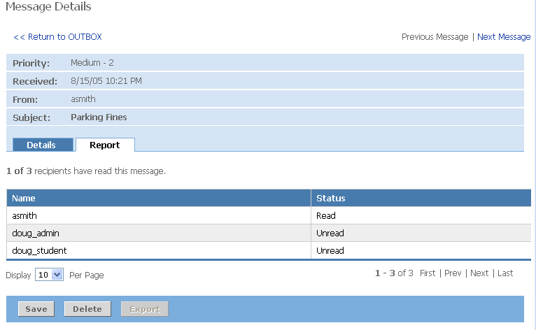

Notification Outbox
Your notification Outbox allows you to view sent notifications, delete sent notifications and view reports on which individuals have read the notification.
To view sent notifications:
- Click the Outbox tab within the Notification portlet.
- Click the message subject to view the details of the messages and report on recipient read/unread status.
- Click Report to view a list of recipients and the read/unread status for each recipient.

Deleting Sent Notifications
To delete notifications from your outbox:
- Place a checkmark next to each notification you wish to delete.
- Click the Delete button.
- Verify that your selection(s) appear in the left navigation pane under the Messages You Have Selected to Delete heading.
- Click the Yes radio button to confirm the deletion of these messages.
- Click the Submit button.
The message will be removed from your outbox